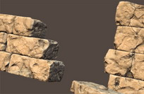

Ressources en Développement
Les psychologues humanistes !
Inspiré par la douleur d'un père
devant son fils victime de la drogue
Il est là devant moi
Silencieux, lointain
Si proche et si loin
Il y a ce mur qui me coupe de lui
C’est dur. J’ai mal.
C’est dur
Si loin et si proche
Il y la méfiance, il y a les souvenirs mauvais
Il y a le désir, il y a la peur de la blessure
Les silences qui nous emmurent
Ensemble et si seuls

Devant, je resterai devantMalgré les repoussements
Patient; je serai patient
Malgré les vents contraires
Malgré la méfiance
Je serai fort et aimant
Plus fort que le mur
J’ai l’espoir de retrouvailles
Je vaincrai le mur,
Si je fléchis je me redresserai
Je verrai son écroulement pierre par pierre
Tous les empires ont connu l’effondrement
Il y a ce mur qui me coupe de toi
C’est dur
Je suis là devant, tenace
Je serai là lorsque le mur ne tiendra plus
Je serai ton père… à jamais
-
Jean-Marc Beaudoin
Écrire à l'auteur
|
en discuter avec les autres lecteurs: La babillard électronique Infopsy ( Qu'est-ce que c'est ? ) |
|
|
Tous droits réservés © 2004 par Ressources en Développement inc. Nous n'exprimons aucune opinion concernant les annonces google Si vous voulez reproduire ou distribuer ce document, lisez ceci |
|